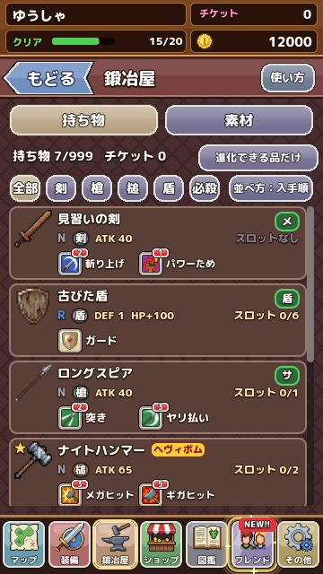

地底の攻略 前半（闇の坑道〜溶岩の川）
地底の最初の 7 エリアの敵と弱点・攻撃の向き、ボスの特殊攻撃と倒し方、初回クリアの品。 更新：2026-11-23
このページの見方
地底の前半 7 エリア（闇の坑道・キノコの森・地底湖・モグラの村・水晶の洞窟・化石の谷・溶岩の川）を順に紹介します。どのエリアも STAGE が 5 つ、STAGE ごとに WAVE が 3 つで、STAGE 4 の最後に中ボス、STAGE 5 の最後にボスが出ます。地底の基本の決まり（フリックガード・連続攻撃・4 つの特殊攻撃）は地底編とフリックガードのページにまとめています。
敵の表の「向き」は、その敵のふつうの攻撃でよく来る向きです。同じ仲間の敵（モグリンの仲間、バットの仲間など）は、属性がちがっても向きの傾向が同じです。「間隔」は攻撃してくるまでのカウントの基本の数で、出てきた直後は 1〜2 多いことがあります。地底の雑魚と中ボスは連続攻撃をしないので、1 回の攻撃は 1 発だけです。
地底のボスの初回クリアの品は、どれも SSR の武器です。初めて倒すと必ずもらえ、2 回目からはまれに落とします。このページのボスはどれも行動の間隔が 3 で、ふつうの攻撃を何回かしたあとに必殺技を撃ち、そのあとに地底の特殊攻撃が続きます。

闇の坑道
地底観測所のチュートリアルのあと、最初に開くエリアです。古い坑道で、敵はすべて無属性です。無属性の武器で無属性の敵を攻撃するとダメージが 1.5 倍になるので、まずは無属性の武器をそろえるのが近道です。
| 敵 | 種族 | 属性 | 弱い武器 | 向き | 間隔 |
|---|---|---|---|---|---|
| モグリン | モグラ | 無 | 槍 | ↓ が多い | 3 |
| ツルハシおやじ | おやじ | 無 | 槌 | ← が多い | 3 |
| ドウクツバット | ケモノ | 無 | 槍 | ↑ が多い | 2 |
| モグボム | モグラ | 無 | 槍 | ↑ が多い | 3 |
| コロダンゴ | ムシ | 無 | 槌 | ← が多い | 3 |
中ボス：トロッコゴーレム（ゴーレム・無・槌が弱点）
攻撃の間隔は 4 で、← と ↓ の攻撃が多めです。槌でスタンを取り、スタン中にまとめて攻撃しましょう。地底ではスタンに必要な値が地上より多いので、弱点の槌で攻めることがより大切になります。
ボス：土竜王モグランデ（モグラ・無・剣が弱点）
ふつうの攻撃は ← か ↓ で、連続攻撃はしません。必殺技の「アースドリル」は潜行で、必殺技の番に地中へもぐり、次の番に主人公の足もとから ↓ で飛び出してきます。この飛び出しをジャスト以上で防ぐと、ボスが 2 ターンのあいだスタンします。もぐったら、ガードボタンを下にはじく準備をして待ちましょう。モグラの種族なので、地底の槌につくことがある「モグラ叩き」のスキル（モグラに 3 倍）もよく効きます。
おすすめと初回クリアの品
槍（モグリン・バット・ボム用）、槌（おやじ・ダンゴ・中ボス用）、剣（ボス用）を 1 本ずつ。STAGE 5 を初めてクリアするとモグラ王の剣（SSR・無・剣。HP が 30% 以下の敵への威力が 160% になる「トドメ」）がもらえます。
キノコの森
大きなキノコが生える森で、風の属性の敵が増えてきます。キノッコの仲間は属性がばらばらで、キノッコが無、モリキノッコが風、ドクキノッコが闇です。風の敵には炎の武器が 2 倍です。
| 敵 | 種族 | 属性 | 弱い武器 | 向き | 間隔 |
|---|---|---|---|---|---|
| キノッコ | プランこ | 無 | 剣 | ← と ↓ | 4 |
| モリキノッコ | プランこ | 風 | 剣 | ← と ↓ | 4 |
| ドクキノッコ | プランこ | 闇 | 剣 | ← と ↓ | 4 |
| モリホタル | ムシ | 風 | 槌 | ↑ が多い | 3 |
| タネモグボム | モグラ | 風 | 槍 | ↑ が多い | 3 |
| モグリン | モグラ | 無 | 槍 | ↓ が多い | 3 |
| ツルハシおやじ | おやじ | 無 | 槌 | ← が多い | 3 |
| トロッコゴーレム | ゴーレム | 無 | 槌 | ← と ↓ | 5 |
中ボス：根掘りモグラ兵（モグラ・風・槍が弱点）
大きさ M のモグラの兵士で、← と ↓ の攻撃が多めです。炎の槍があれば 2 倍のダメージが入ります。
ボス：茸龍マタンゴラス（ドラゴン・風・槍が弱点）
ふつうの攻撃は ↑ か ← で、3 回に 1 回くらいの割合で 2 発の連続攻撃になります。必殺技の「ほうしの雨」（↑）のあとは闇の帳。このあとの 3 回の攻撃は矢印が「？？」で隠れ、当たる 0.5 秒前に本当の向きが出ます。あわてて先にはじくと外れるので、向きが出るまでじっと待つのがコツです。下の攻撃はしてこないボスなので、隠れていても ↑ か ← のどちらかだと考えて構えられます（必殺技の ↑ も同じです）。
おすすめと初回クリアの品
炎の槍（中ボス・ボス用）、剣（キノッコの仲間用）、槌。STAGE 5 を初めてクリアすると茸龍槍マタンゴ（SSR・風・槍。当てると 10% の確率で毒にする「毒の牙」）がもらえます。次の地底湖は水の敵が多く、風の槍が弱点の敵もいます。
地底湖
地底に広がる静かな湖で、水の属性の敵が中心です。風の武器ならダメージ 2 倍。前のエリアでもらった茸龍槍マタンゴが、ビショモグやシズクバットに属性と弱点の両方で刺さります。
| 敵 | 種族 | 属性 | 弱い武器 | 向き | 間隔 |
|---|---|---|---|---|---|
| ビショモグ | モグラ | 水 | 槍 | ↓ が多い | 3 |
| ミズダンゴ | ムシ | 水 | 槌 | ← が多い | 3 |
| シズクバット | ケモノ | 水 | 槍 | ↑ が多い | 2 |
| みずまどうし | スケルトン | 水 | 剣 | ↑ と ↓ | 3 |
| キノッコ | プランこ | 無 | 剣 | ← と ↓ | 4 |
| モリキノッコ | プランこ | 風 | 剣 | ← と ↓ | 4 |
| 根掘りモグラ兵 | モグラ | 風 | 槍 | ← と ↓ | 4 |
中ボス：沈没騎士（スケルトン・水・剣が弱点）
骨の騎士で、攻撃の向きにかたよりがなく、↑←↓ がほぼ同じ割合で来ます。矢印を最後までよく見てはじきましょう。風の剣が最適で、地底の剣につくことがある「骨斬り」のスキル（スケルトンに 3 倍）もよく効きます。
ボス：湖龍ネッシーナ（ドラゴン・水・剣が弱点）
ふつうの攻撃は ← か ↓。必殺技の「大渦」は ←←← の 3 発で、潜行つきです。必殺技の番に地中へもぐり、次の番に、まず地中にいたまま 2 発、少し間をおいて顔を出してから最後の 1 発を当ててきます。3 発ともジャスト以上で防げば 2 ターンのスタン。2 発目と 3 発目のあいだの間（ま）にあせってはじかないことが大切です。
おすすめと初回クリアの品
風の剣（中ボス・ボス・まどうし用）、風の槍（モグラ・バット用）、槌（ダンゴ用）。STAGE 5 を初めてクリアするとネッシーブレード（SSR・水・剣。当てるたびに 25% の確率で、同じ敵にもう一度 50% のダメージを与える「反響」）がもらえます。後半の地底都市は炎の敵ばかりで剣が弱点の敵が多いので、長く使えます。
モグラの村
モグラたちが暮らす地底の村で、2 つめのショップがあります。地底ガチャは 1 回 25,000 コイン（武器 SSR 25%）で、R の盾のコウモリの翼盾（天井の守り）とモグラの爪盾（足もとの守り）が 12,000 コインで買えます。敵は無・風・水がまじっています。
| 敵 | 種族 | 属性 | 弱い武器 | 向き | 間隔 |
|---|---|---|---|---|---|
| ホタルン | ムシ | 無 | 槌 | ↑ が多い | 3 |
| ハッパモグ | モグラ | 風 | 槍 | ↓ が多い | 3 |
| キノコ狩りおやじ | おやじ | 風 | 槌 | ← が多い | 3 |
| ヌメキノッコ | プランこ | 水 | 剣 | ← と ↓ | 4 |
| アワモグボム | モグラ | 水 | 槍 | ↑ が多い | 3 |
| ビショモグ | モグラ | 水 | 槍 | ↓ が多い | 3 |
| ミズダンゴ | ムシ | 水 | 槌 | ← が多い | 3 |
| 沈没騎士 | スケルトン | 水 | 剣 | ばらばら | 4 |
中ボス：モグラ兵（モグラ・無・槍が弱点）
← と ↓ の攻撃が多い大きさ M のモグラです。無属性の槍で攻めましょう。
ボス：岩蟲ガンクイ（ムシ・無・槌が弱点）
このボスのふつうの攻撃はいつも ←← の 2 発の連続攻撃です。向きが決まっているので、正面の守り（← のダメージを減らす）の盾や、連続攻撃の 2 発目からのダメージを減らす連撃の守りの盾がよく効きます。必殺技の「まるのみ」は潜行で、もぐったあと足もとから ↓ で飛び出してきます。ジャスト以上で防げば 2 ターンのスタンです。ムシの種族なので、地底の槍につくことがある「ムシ払い」（ムシに 3 倍）も効きます。
おすすめと初回クリアの品
無属性の槌（ボス・ホタル・ダンゴ・おやじ用）、槍（モグラ用）、剣（キノッコ・騎士用）。盾は正面の守りがおすすめです。STAGE 5 を初めてクリアすると岩蟲槌ガンクイ（SSR・無・槌。敵をスタンさせた瞬間に攻撃力の 300% のダメージを与える「スタン爆発」）がもらえます。次の水晶の洞窟は槌が弱点の中ボスとボスがそろっていて、さっそく活躍します。

水晶の洞窟
光る水晶に囲まれた洞窟で、光の属性の敵が中心です。闇の武器ならダメージ 2 倍。槌が弱点のダンゴ・ホタル、中ボス、ボスがそろっているので、闇の槌があると一気に楽になります。
| 敵 | 種族 | 属性 | 弱い武器 | 向き | 間隔 |
|---|---|---|---|---|---|
| キラモグ | モグラ | 光 | 槍 | ↓ が多い | 3 |
| キラダンゴ | ムシ | 光 | 槌 | ← が多い | 3 |
| マブシホタル | ムシ | 光 | 槌 | ↑ が多い | 3 |
| ミラーバット | ケモノ | 光 | 槍 | ↑ が多い | 2 |
| ピカモグボム | モグラ | 光 | 槍 | ↑ が多い | 3 |
| ホタルン | ムシ | 無 | 槌 | ↑ が多い | 3 |
| ハッパモグ | モグラ | 風 | 槍 | ↓ が多い | 3 |
| モグラ兵 | モグラ | 無 | 槍 | ← と ↓ | 4 |
このエリアは ↑ の攻撃をしてくる敵が多いので、天井の守り（↑ のダメージを減らす）の盾も候補になります。
中ボス：水晶ゴーレム（ゴーレム・光・槌が弱点）
攻撃の間隔は 4 で、← と ↓ が多めです。闇の槌でスタンを取りましょう。岩蟲槌ガンクイのスタン爆発は、スタンさせた瞬間に大きなダメージが入るので、硬いゴーレムとの相性がとてもよいです。
ボス：晶龍プリズマス（ドラゴン・光・槌が弱点）
ふつうの攻撃は ↑←↓ のどれもが同じくらいの割合で来ます。必殺技の「プリズムレイ」は ↑←↓ の 3 発で、そのあとに地震が起きます。地震のあとの 1 回のガードは、構えが半分の長さになり、ジャストの受付もせまくなって、ミラクルにはなりません。地震のあとの攻撃はミラクルをねらわず、確実にガード以上で受けることだけを考えましょう。
おすすめと初回クリアの品
闇の槌を主役に、闇の槍（モグラ・バット用）。STAGE 5 を初めてクリアすると晶龍槌プリズム（SSR・光・槌。その WAVE で防いだ向き 1 つにつき威力が 15% 上がる「三方見切り」。↑↑・←←・↓↓ の 3 つまで）がもらえます。光の槌は、後半の骨の墓場のボス（闇の属性で槌が弱点）に最適です。
化石の谷
大きな骨の化石が眠る谷で、スケルトンの敵がたくさん出てきます。スケルトンはどれも剣が弱点なので、ここは剣の出番です。地底の剣につくことがある「骨斬り」（スケルトンに 3 倍）があれば、さらに速く倒せます。
| 敵 | 種族 | 属性 | 弱い武器 | 向き | 間隔 |
|---|---|---|---|---|---|
| ホネッコ | スケルトン | 無 | 剣 | ↑ と ← | 3 |
| ツタホネ | スケルトン | 風 | 剣 | ↑ と ← | 3 |
| アワホネ | スケルトン | 水 | 剣 | ↑ と ← | 3 |
| ガイコツまどうし | スケルトン | 無 | 剣 | ↑ と ↓ | 3 |
| 井戸掘りおやじ | おやじ | 水 | 槌 | ← が多い | 3 |
| キラモグ | モグラ | 光 | 槍 | ↓ が多い | 3 |
| キラダンゴ | ムシ | 光 | 槌 | ← が多い | 3 |
| 水晶ゴーレム | ゴーレム | 光 | 槌 | ← と ↓ | 5 |
中ボス：ガイコツ騎士（スケルトン・無・剣が弱点）
向きにかたよりのない骨の騎士です。無属性の剣でスタンを取りましょう。前のエリアの中ボスだった水晶ゴーレムがお供につくこともあるので、槌も 1 本持っておくと安心です。
ボス：骨龍ボーンザウルス（スケルトン・無・剣が弱点）
竜の化石のボスですが、種族はスケルトンなので、骨斬りの剣がそのまま効きます。ふつうの攻撃は ← か ↓ で、ときどき 2 発の連続攻撃になります。必殺技の「ボーンクラッシュ」（↓）のあとは地震。次の 1 回のガードは確実さを優先しましょう。
おすすめと初回クリアの品
無属性の剣を 2 本（できれば骨斬りつき）と、槌を 1 本。STAGE 5 を初めてクリアすると骨龍槌ザウルス（SSR・無・槌。スタン中の敵を倒すと、ほかの敵のスタンのたまりが 30% 増える「スタン連鎖」）がもらえます。
溶岩の川
溶岩が流れる川のほとりで、炎の属性の敵が中心です。水の武器ならダメージ 2 倍。ここから地底で落ちる盾に SSR がまじり始めます。
| 敵 | 種族 | 属性 | 弱い武器 | 向き | 間隔 |
|---|---|---|---|---|---|
| アチモグ | モグラ | 炎 | 槍 | ↓ が多い | 3 |
| ヤキダンゴ | ムシ | 炎 | 槌 | ← が多い | 3 |
| ヒバナホタル | ムシ | 炎 | 槌 | ↑ が多い | 3 |
| ヒノコバット | ケモノ | 炎 | 槍 | ↑ が多い | 2 |
| メラモグボム | モグラ | 炎 | 槍 | ↑ が多い | 3 |
| ホネッコ | スケルトン | 無 | 剣 | ↑ と ← | 3 |
| ツタホネ | スケルトン | 風 | 剣 | ↑ と ← | 3 |
| ガイコツ騎士 | スケルトン | 無 | 剣 | ばらばら | 4 |
中ボス：溶岩ゴーレム（ゴーレム・炎・槌が弱点）
攻撃の間隔は 4 で、← と ↓ が多めです。水の槌が最適です。
ボス：溶龍マグマドラグ（ドラゴン・炎・槍が弱点）
ふつうの攻撃は ↑ か ←。必殺技の「大噴火」は ↑↑↑ の 3 発で、そのあと溶岩床でやけどになります。やけどは 3 ターンのあいだ毎ターン最大 HP の 4% が減るもので、↓↓ の攻撃をジャスト以上で防ぐと消せますが、このボスは ↓ の攻撃をしてきません。つまりボス戦ではやけどは消せないので、1 回の溶岩床で最大 HP の 12% ほどが減る前提で、HP に余裕を持って戦いましょう。HP を回復できるのはミラクルガードだけなので、ふつうの攻撃でミラクルをねらうのも大切です。必殺技は ↑↑↑ と決まっているので、天井の守りの盾で軽くできます。
おすすめと初回クリアの品
水の槍（ボス・モグラ・バット用）、水の槌（中ボス・ダンゴ・ホタル用）、剣（スケルトン用）。STAGE 5 を初めてクリアすると溶龍槍マグマ（SSR・炎・槍。必殺技を出すと ST が 2 回復する「必殺充填」）がもらえます。炎の槍は、後半の根っこの迷宮の風の敵に有利です。続きは地底の攻略 後半へ。

前半を進めるときのコツ
- 地底では地上の SR+ の武器では苦しくなります。落ちる SSR の武器と初回クリアの品で、早めに乗りかえましょう
- 敵の仲間ごとの向きの傾向を覚えると、矢印が出た瞬間に指が動くようになります。バットとボムとホタルは ↑、モグリンの仲間は ↓、ダンゴとおやじは ← が多めです
- 潜行のボス（モグランデ・ネッシーナ・ガンクイ）は、飛び出しをジャスト以上で防げば 2 ターンのスタンです。もぐったら構えて待ちましょう
- モグラの村で買える R の盾は、向きの守りの基本です。ボスの攻撃の向きに合わせて盾を選びましょう